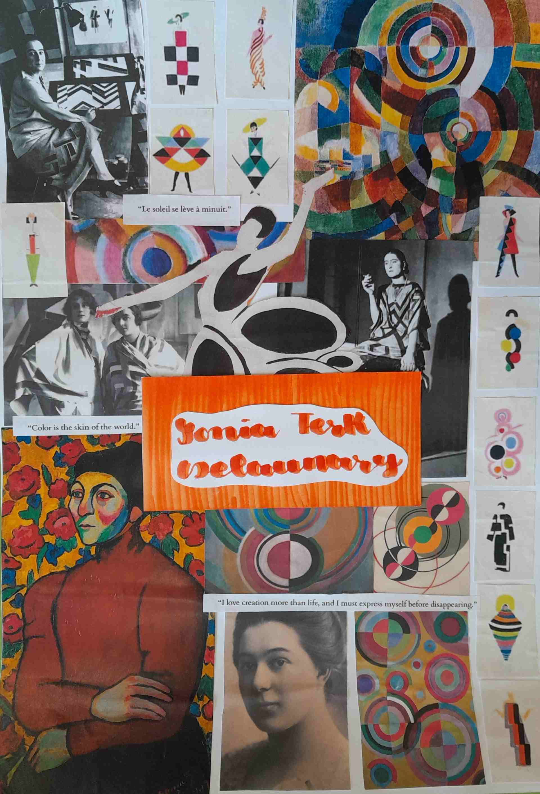

Sonia Terk Delaunay
Sonia Terk Delaunay nacque ad Odessa in una famiglia ebrea il 14 novembre del calendario giuliano, data scelta da lei. Il padre era Ella Stern e si trasferì con la famiglia di Hradyz ek in un villaggio vicino Kremencak, dove trascorse i primi anni di vita. La madre, Hama Terk, proveniva da una ricca famiglia ebraica, dove il fratello maggiore, Guernrikh chiamato Henn, riuscì a diventare avvocato. Nel 1890, Henn si recò dalla sorella disposto ad adottare uno dei nipoti, dato che sua moglie era sterile. Lo zio, impressionato dalla sua intelligenza, scelse Sonia per San Pietroburgo, poiché la zia era l'unica erede degli eredi di una banca locale. Nonostante la calorosa accoglienza della donna, Sonia aveva sempre una grande repulsione per lei. Sonia studiò a San Pietroburgo e nel 1903 iniziò un corso di disegno a Karlsruhe, in Germania. Ispirata, si trasferì a Parigi e cominciò a dipingere dopo aver incontrato Paul Gauguin e Vincent van Gogh. Nel 1910 sposò il pittore Robert Delaunay. Nel 1913 condivise i fasti di Parigi nell'Esposizione Mondiale e nel creare dei berretti astratti che aveva progettato per l'Esposizione del 1937. Dopo la Seconda Guerra Mondiale, espone le sue opere d'arte. Sonia Delaunay morì il 5 dicembre 1979.
Image Gallery

Give your image a caption. People love context.
 Give your image a caption. People love context.
Give your image a caption. People love context.